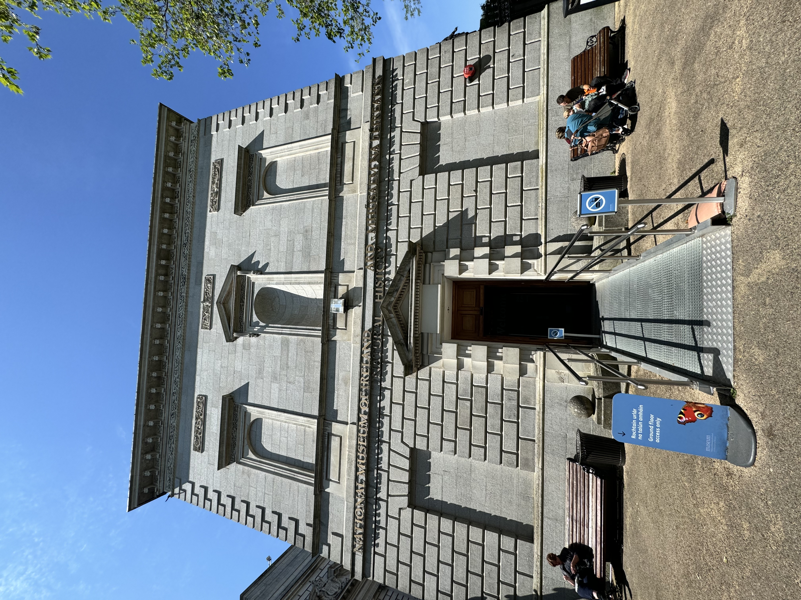

On my first day in Dublin, we explored the beautiful neighborhood of Howth. Our journey began with a visit to the breathtaking Howth Head Peak, surrounded by lush greenery. After soaking in the natural beauty, we indulged in a delightful lunch at Crabby Jo's, a charming restaurant nestled in Howth's harbor. I savored the delicious Baked Salmon Darne accompanied by sautéed mushrooms and onions.
Following lunch, we returned to our hotel where I took some time to settle in before embarking on an exploration of the local streets, immersing myself in the vibrant atmosphere. For dinner, we dined at The Brazen Head, Dublin's oldest pub. I couldn't resist trying the mussels, and they were absolutely delicious!
Howth Head Peak
Crabby Jo's
Brazen Head
Day two in Dublin unfolded as a captivating journey through the city's rich tapestry of history and culture. Embarking on a guided bus tour, we immersed ourselves in the stories of Dublin's past and present.
Our journey kicked off with a visit to the solemn Famine Memorial, a touching tribute to those who faced unimaginable hardship during Ireland's Great Famine. As I stood among the haunting sculptures, I couldn't help but feel a deep sense of respect for the resilience and strength of the Irish people.
As we continued our adventure, we found ourselves at the legendary General Post Office (GPO). This place isn't just a building; it's a piece of history, filled with stories of rebellion and resilience. Standing in front of its impressive architecture, we couldn't help but feel a sense of awe. Learning about its past, we gained a deeper appreciation for the determination of the Irish people. And right outside, we encountered the Spear of the Nation, a powerful reminder of Ireland's fight for freedom.
We explored Dublin's beautiful park! Not only does this park have beautiful plants, trees and bodies of water, but it also has the cutest little birds!
We also explored Dublin's rarest library!
In this lecture, we delved into the captivating realm of gamification, exploring how game elements can transform ordinary tasks into engaging experiences. This transformative process encompasses a myriad of elements including challenges, social interaction, immersion, goal orientation, feedback mechanisms, progression, and playfulness. The discussion extended to the frameworks of MDA (Mechanics, Dynamics, Aesthetics) and MDAO (Mechanics, Dynamics, Aesthetics, and Outcomes), highlighting the dynamic nature of user behavior and the unforeseen outcomes that often arise. Finding the delicate balance between providing autonomy and maintaining control emerged as a central challenge in designing gamified experiences. Games are meticulously crafted to captivate and immerse players in rich environments, a feat not easily replicated in educational settings. However, our lecturer emphasized that understanding user behavior and needs is key to fostering engagement. Through meticulous analysis and mapping of mechanisms, he outlined strategies for applying gamification principles to learning environments. The concept of engagement was dissected, revealing its multifaceted nature often intertwined with participation, goals, motivation, immersion, drive, and flow. Drawing from research, we explored engagement in technology, defined by a rich array of attributes including challenge, positive affect, aesthetic appeal, attention, interactivity, and perceived user control. One of the pivotal discussions centered around the measurement of engagement, which encompasses dimensions such as skills development, participation and interaction levels, emotional responses, and performance outcomes. Additionally, accessibility emerged as a critical consideration, emphasizing the importance of creating inclusive experiences that accommodate diverse user needs. As we navigate the evolving landscape of gamification and user engagement, these insights serve as guiding beacons, illuminating pathways toward creating more immersive, meaningful, and inclusive experiences for all.
In my first Friday in Dublin, I started out the day with class then in the afternoon headed to the EPIC Museum, The Irish Immigration Museum on the North side of the city. This museum had 20 different rooms, each showing a different part of Irish culture: art, music, food, and its history/global connection.
For more information about the EPIC museum, you can visit their website: EPIC Museum
Check out what I did in Glendalough here and Kilkenny here!
To start off my second week in Dublin, we went to the National Disability Authority of Ireland, where we had the privilege of attending a hearing from Donal Rice, the Head of Monitoring Unit and EU Web Accessibility Directive.
Rice explained many topics related to accessibility, but one principle stood out to me the most among the rest: the importance of integrating accessibility into website design from the outset, rather than treating it as an afterthought.
According to Rice, it's not about adding accessible features later; it's about ensuring accessibility is woven into the fabric of the design process right from the start.
During his presentation, Rice also delved into the contrasting approaches taken by the United States and Ireland when it comes to enforcing accessibility standards on websites.
While the American approach often involves litigation, the European/Irish approach leans towards advising and guiding companies to adopt accessible practices.
Furthermore, Rice shared insights into how the National Disability Authority evaluates websites in terms of accessibility, monitoring company's sites to gauge their accessibility levels and providing valuable feedback and reviews to help improve accessibility standards.
Overall, tt was a very interesting and enlightening session that underscored the importance of inclusivity and accessibility in web design.
Despite the somber nature of the Natural History Museum's exhibits, I found it to be an enlightening experience. The museum's extensive array of preserved wildlife specimens, spanning mammals, birds, and insects, offered a captivating window into Ireland's diverse ecosystems.
A standout moment for me was observing the seals, particularly the common and grey varieties, which I had never encountered in person before. Their proximity allowed me to appreciate their unique beauty in a way I likely won't have the chance to again, and I couldn't help but find them irresistibly charming. While familiar animals like bunnies, deer, and birds didn't hold the same novelty, I still appreciated the opportunity to observe them in such detail.
Additionally, encountering the imposing presence of a shark suspended above added an extra layer of intrigue to the experience. Overall, delving into the history and evolution of these creatures proved both enriching and thought-provoking.

After our usual morning class, I embarked on my journey to head to Microsoft's Dublin Headquarters, located in Dublin's suburbs of Carmanhall and Leopardstown.
This journey involved taking the Luas tram for the very first time. I walked to the St. Stephen's Green Luas Tram stop and got off at the Central Park station, where I then headed to the headquarters.
Upon arrival, I was greeted by the rest of the group and the friendly staff, Linda Zogaj and Victor Seitl, who would guide us in the journey through the building.
I was given a visitor's badge then escorted to the main lobby, where we began the tour of the place.
Inside, the Microsoft offices were incredibly modern and impressive, with a sleek and open design.
We were shown various collaborative workspaces, meeting rooms, and the company's impressive cafeteria and recreational facilities.
The highlight of the tour was when we were taken to the roof terrace, which offered stunning views of the Dublin skyline.
I also loved seeing the map of Microsoft Ireland's office on their wall, showing just how international their team is, with colleagues from all over the globe.
Overall, the tour provided insights into Microsoft's company culture, emphasizing their focus on employee well-being, work-life balance, and fostering a creative, innovative, and diverse environment.
Our last stop on the tour was the conference room.
There, we were given a presentation about Microsoft's work in Ireland and the various initiatives they are involved in, including their commitment to accessibility and inclusive design.
We also learned about Articifical Intelligence (AI).
My main takeaways from this part of the presentation were how Microsoft and the world is constantly changing and improving its AI technolgy and the importance of being proficient with AI.
The presenters emphasized that AI will be a critical skill for the future and that Microsoft is at the forefront of AI development, with a strong focus on responsible and ethical AI practices.
Overall, the site visit to Microsoft's EMEA headquarters was an insightful and inspiring experience, providing a glimpse into the company's cutting-edge work and its commitment to innovation, accessibility, and inclusivity.
It was a very educational and fun experience!
After a morning of classes, I had the opportunity to join a guided tour of Dublin's historic financial and industrial district, led by Dr. Darren Kelly, an expert on the history and development of this vibrant district.
The tour started outside the Custom House facing the River Liffey and ended at the iconic Samuel Beckett Bridge, covering some of the most iconic landmarks and architectural gems of the Docklands area.
The Docklands, located along the River Liffey, have undergone a remarkable transformation in recent decades, transitioning from a once-industrial area to a thriving hub of business, culture, and innovation.
As we walked through the neighborhood, Dr. Kelly shared fascinating insights into the area's past, present, and future.
We explored the iconic Samuel Beckett Bridge, a striking architectural landmark that has become a symbol of the Docklands' revitalization.
We also visited the Grand Canal Dock, which has been transformed into a vibrant hub of activity, with modern office buildings, trendy cafes, and a lively waterfront promenade.
Dr. Kelly highlighted the area's rich history, including the role of the Docklands in Dublin's industrial and maritime past, as well as the more recent efforts to preserve and celebrate the area's heritage.
Throughout the tour, we were struck by the seamless integration of old and new, with historic buildings and structures coexisting harmoniously with cutting-edge architecture and urban development.
The tour provided a fascinating glimpse into the transformation of the Docklands, showcasing how the area has evolved to become a vibrant and dynamic part of Dublin's cityscape.
The insights shared by Dr. Kelly, with his deep knowledge of the area's history and development, truly enriched the experience and gave us a deeper appreciation for the Docklands' significance in the city's story.
Following our regular morning class, we ventured to Google's Dublin Headquarters nestled in the heart of Dublin's Grand Canal Dock.
Our visit commenced with a warm reception from the Google team, Wanja Hvorov and Eoin Carroll, who provided us with a comprehensive overview of the company's ethos, emphasizing its dedication to innovation, diversity, and sustainability.
We were then treated to a guided tour of the remarkable office space, meticulously designed to inspire creativity and foster collaboration among employees.
The office boasted an array of amenities aimed at enhancing the well-being and productivity of its workforce, including a gourmet cafeteria, a recreational game room, a refreshing pool, a 'Bob Marley room', and an onsite wellness center offering medical services and massages.
They also include various motivational messages on their walls, highlighting the company's core values and mission to empower people and communities through technology.
A particularly intriguing aspect I discovered was Google's inclusive dining policy, where all employees enjoy complimentary meals and snacks throughout the day.
My favorite part of the building was their rooftop, featuring a wonderful panoramic view of Dublin's skyline.
I also enjoyed learning about Google's innovative "work from anywhere" initiative, allowing any "Googler" to work from any Google office worldwide for one month annually.
This unique perk fosters a sense of global connectivity, community, and collaboration among employees across the globe.
The tour concluded with a Q&A session, where we had the opportunity to engage directly with the Google team and gain deeper insights into the company's culture, values, and future plans.
Overall, the experience at Google's Dublin Headquarters was eye-opening, showcasing the company's commitment to creating an exceptional work environment that empowers and inspires its employees.
To finish off my second week in Ireland, I went to the Cliffs of Moher. Check out what I did in the Cliffs of Moher here!
Week 3
To start out my last week in Ireland, I started out my day with a Walking Tour of Trinity College Dublin.
The tour guide provided fascinating insights into the history and architecture of this prestigious university, which dates back to the 16th century.
I was particularly excited to see the magnificent Trinity College Library, home to the renowned Book of Kells - an ancient illuminated manuscript from the 9th century.
I also found the Campanile, the iconic bell tower of Trinity College, to be an impressive architectural feat.
Finally, the Sphere sculpture, located in the college's Front Square, caught my eye with its unique and thought-provoking design.
Overall, the Trinity College tour provided me with a deeper appreciation for the university's storied history and its role in shaping Ireland's intellectual and cultural landscape.
After the Trinity College visit, I made my way to the National Museum of Ireland, which houses an impressive collection of artifacts and exhibits showcasing Ireland's rich cultural heritage.
The museum's highlights for me included the stunning silver Chalice, a remarkable example of Celtic metalwork, as well as the intriguing Bog Bodies - remarkably preserved human remains from the Iron Age that provide insights into ancient Irish society.
The museum's grand architecture and thoughtful curation made for a truly engaging and educational experience, further deepening my appreciation for Ireland's fascinating history and traditions.
The National Museum of Ireland
The Chalice
Bog Boddies
For my cultural activity this day, I participated in an Irish dance class with fellow students at the Griffith College in Dublin.
I had so much fun learning the basic steps of jigs and reels under the instruction of my teacher Céilí.
It was a true workout but I was amazed at how quickly I picked up the footwork and timing.
Dancing with the other students to live Irish music really helped me feel more connected to Irish culture.
By the end of the class, we were able to do a few simple dance routines without too many mistakes.
I'm definitely looking forward to practicing more and hopefully getting better at Irish dancing over time!